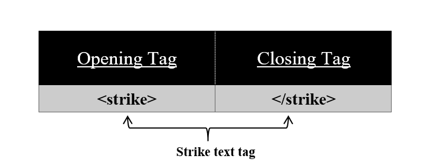

For strike text use <strike> tag on your HTML page.
Syntax:
<strike>
//content
</strike>
Using this <strike> tag we can make a thin line on our text. All the content in between this tag appears to be displayed with a strikethrough. <strike> tag has also its corresponding </strike> tag.